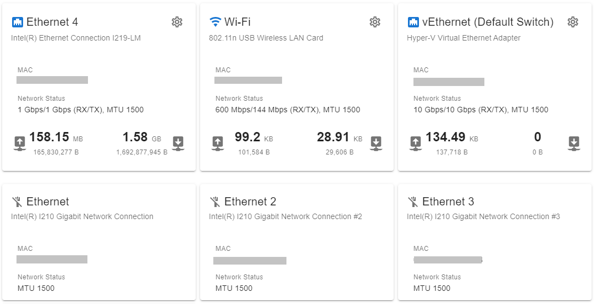
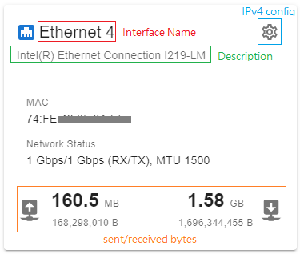
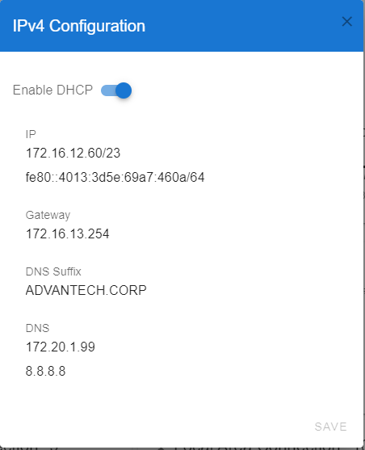

Interfaces
It provides an overview of network interfaces in the device.

Interface Information

IPv4 Configuraiton
DHCP
Turns on the Enable DHCP switch button to enable the DHCP.

Static IP
Turns off the Enable DHCP switch button and sets the IPv4 configuration with static IP and DNS. If a static IP is specified, then DNS must be specified also.